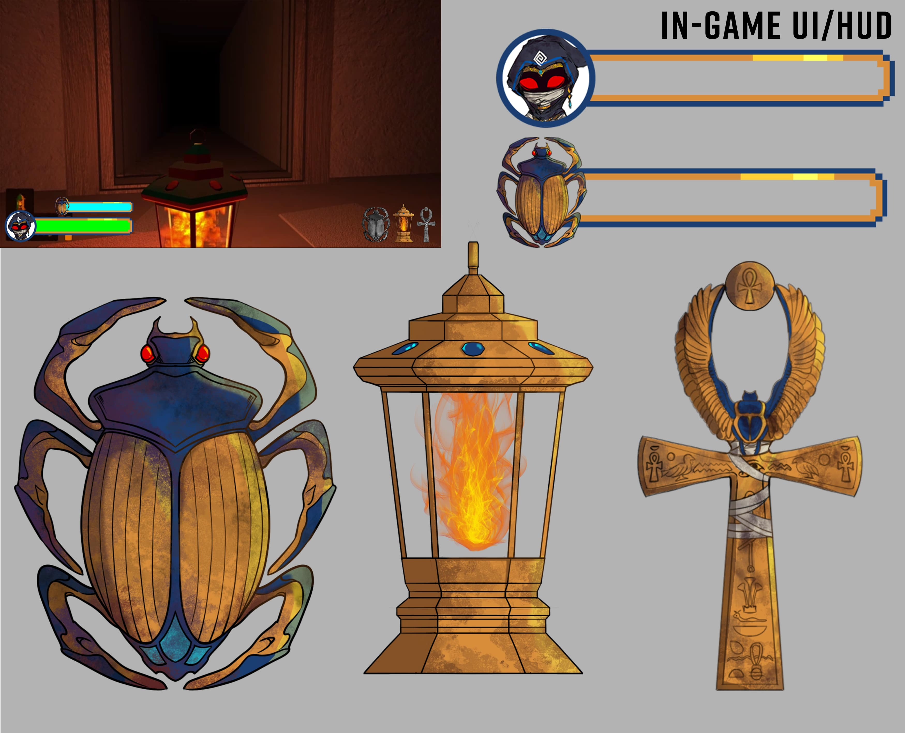
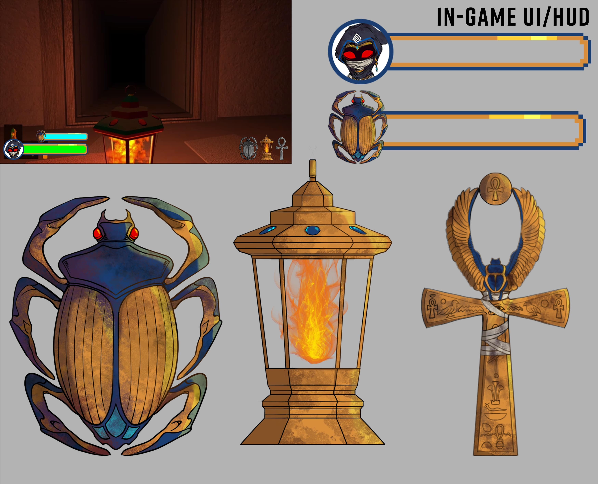
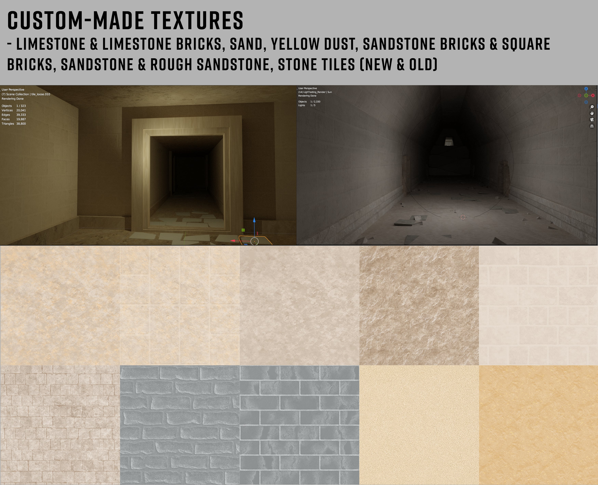
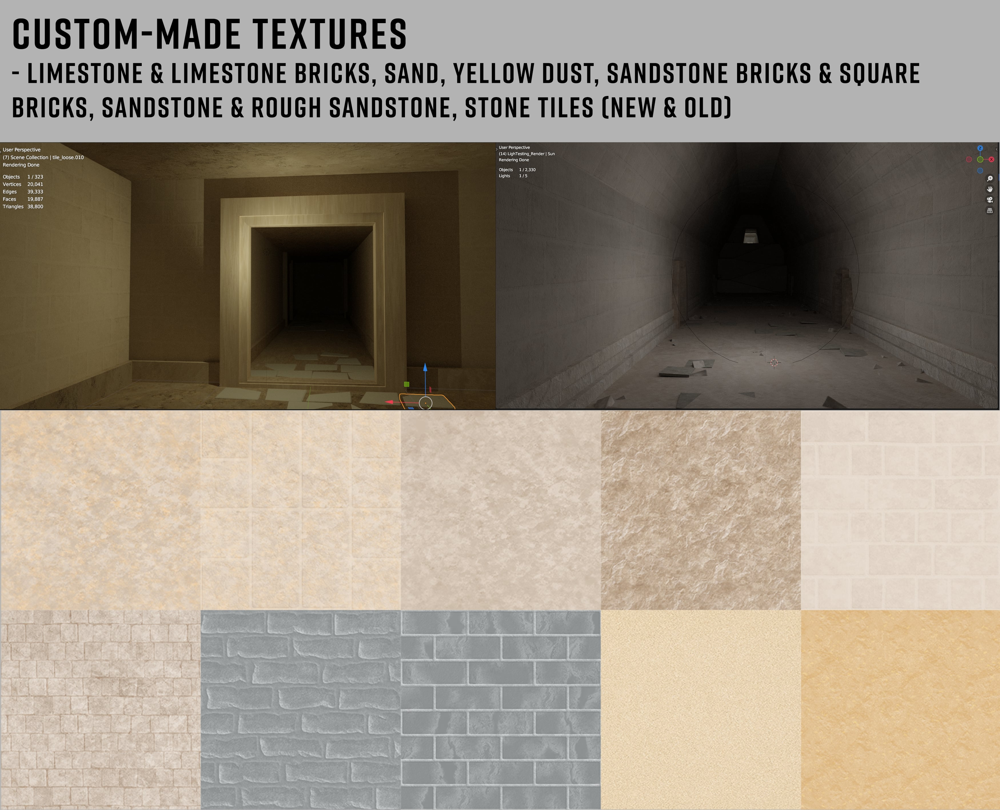

League of Legends
est. 2021
Concept Artist | Fanmade Art | 2D Artist | 3D Modeling
My favorite game is League of Legends as I have been an avid player of the game since 2016. I am currently exploring fan-made skin concept art but want to branch out to testing my hand on making fan-made new champion designs as well.
Check out my Instagram for more >>
![As a Chinese American and avid Cdrama enjoyer, I really loved the Immortal Journey skinline that Riot released in 2023 that focused on the idea of Xianxias and Chinese Fantasy which is a huge passion of mine. As a result, I started to explore some skin concepts for Yone since he was my favorite character.
||
After my 1st drafts, the release of Heavenscale skinline came out that focused on the core theme of dragons due to Chinese Lunar New Year being the Year of the Dragon and I noticed my skin ideas were heavily influenced by dragons and the idea of immortality and decided to shift the skinline to Heavenscale instead. This resulted in another line of drafts focusing on different ideas of dragons: Dragon prince, Dragon warrior, etc. In the end, I decided to solidify on the Regal Robes of an emperor as well as giving him multiple jade ornaments as well as a sheer veil similar to those of higher positions in the old Chinese Dynasty.](assets/images/LOL/yone.jpg)
![In this concept, I wanted to play around with the old pool party skinline with their weapons being a playful toy you would see kids playing around with at a peach: ex. water guns, foam pool swords, etc. I loved the idea of the inflatable toys like swords, axes, etc and wanted to make one for Kayn since he is all edge and giving him an inflatable toy as Rhaast was just fitting. || I decided to explore the shark and orca to keep the idea of apex predator but realized later on a Toucan would be more fitting with the bright orange contrasting with the blues and gold of the swim trunks. I also found it suited better since a toucan’s beak is originally curved and the idea of being hit by a toucan bird was just silly which was the feeling I was going for with the playful toy.](assets/images/LOL/kaynpp.jpg)
![This was one of my first fan-made skin concepts I made for League of Legends and I decided to explore the Spirit Blossom Skinline that was based on the idea of the afterlife and a time where the dead visit their loved ones. Some core features of the skinline were Japanese apparel, cherry blossom motifs, and purple,blue,pink hues. || When concepting this concept, I wanted to give Morgana a standard kimono and push for the geisha look but later decided to change it and made it a bit more ornamented and follow the flow of her original dress as well as keeping the wings feathery but added spirit flames to make her more recognizable champion-wise.](assets/images/LOL/2.jpg)
![I wanted to study key features of champions and what made them so iconic that you could recognize them even in different forms (in this case; poros). For Xayah and Rakan, I found that the most iconic features of the lovebirds were their hair (and ears) and hoods as well as Xayah’s face markings. Even without the rest of the cape and feathers, we can distinguish the champions due to these 3 components. || As for Ashe and Milio, the key features were Ashe’s hood and hawkshot and Milio’s backpack and fire friends(or as he calls it, Fuemigos). In addition to this, I intentionally chose bot lane duos since poros are said to be “made of love” and bot lane is notorious for being labeled as the “couple lane”.](assets/images/LOL/poros.jpg)
![I wanted to explore the Winterblessed skinline that focused on deep blues and purple symbolic of the Northern Lights and decided to keep the color palette limited to cool colors with gold accent colors. In my design, I decided to do the weapons first since that is the core focus of the skinline with crystal/orb-like weapons and gradients to give the feeling of ethereality. || When it came to costume design, I decided to keep Yone’s upper body exposed similar to his base skin and focus more on the bottom half of his design with the upper half more simplistic.](assets/images/LOL/wbyone.jpg)
![In one of my classes, I was tasked with creating a character resembling myself and going from concept to 3D model and animation (run cycle.) I decided to merge myself and SKT T1 Nami since T1 is my favorite esports team and Nami was my best champion. || In the process of designing the character, I kept my length of hair, color of eyes, as well as body silhouette of mine and took inspiration from Nami’s armor and color palette to create the chest armor, boots, fins, and jacket. I decided to keep the iconic red hair of Nami since it was a key feature of her design second to the gold armor. However, I kept the eyes brown as I wanted to keep some aspects of my real profile in the design. I decided not to copy the tail verbatim and instead translated the tail into the boots and jacket as well as the arm fins (similar to arm blades).](assets/images/LOL/aikoimodel.jpg)
Godslayers
Jan 2024 - Present
Co-Producer | Art Director | UI/UX | 2D Animator | Game Developer
Godslayers is a turn-based RPG about a party of heroes stuck in a never ending time loop against their story’s final boss. Uncover who the final boss is, why the time loop started in the first place, and the stories of your heroes.
The player controls the party and their actions as they fight. Learn how the boss reacts to them, and how they should react to the boss. With each phase of the boss fight, more information is revealed, the player gains access to more abilities, and both the party and the boss grow stronger.
Play Godslayers on Itch.io >>


Shabti
December 2023
Concept Artist | Texture Artist | 2D Artist | UX/UI | Logo Design
In "Shabti," a 3D Egyptian-themed survival-horror, you step into the bandages of a small, newly reanimated mummy, desperately navigating a pyramid's labyrinthine corridors while evading relentless enemies with distinct behaviors. As you navigate the maze, solving puzzles and conserving your limited resources to keep your lantern burning, a chilling revelation awaits upon reaching freedom.
As the mummy explores the pyramid's depths, it encounters various foes with distinct behaviors and strategies to impede its progress. Some creatures may lurk in the shadows, waiting for the opportune moment to strike, while others may patrol predetermined routes, forcing the player to carefully time their movements to avoid detection. Meanwhile, the mummy must utilize its wits to solve intricate puzzles scattered throughout the pyramid, each puzzle unlocking a new passage or revealing vital clues to aid in its escape. With tension mounting with each passing moment, players must balance stealth, strategy, and problem-solving skills to overcome the myriad challenges and ultimately unravel the mystery behind their entombment.
Play Shabti on Itch.io >>

 

 
